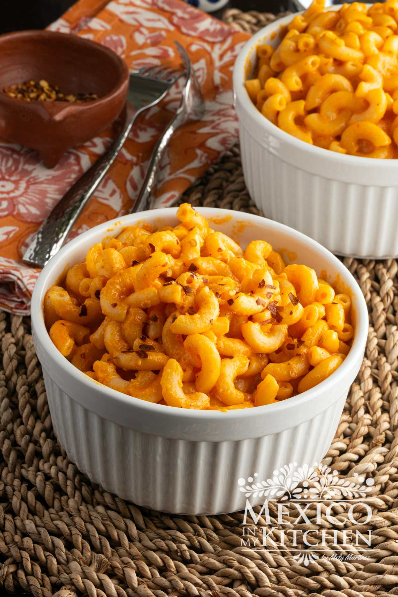

mac and cheese recipe
Home

Mac and Cheese Ingredients:
- 1 pound elbow macaroni
- 4 tablespoons unsalted butter
- 1/4 cup all-purpose flour
- 4 cups whole milk
- 3 cups shredded sharp cheddar cheese
- 1 cup shredded mozzarella cheese
- 1/2 cup grated Parmesan cheese
- 1 teaspoon Dijon mustard
- 1/2 teaspoon garlic powder
- 1/2 teaspoon salt
- 1/4 teaspoon black pepper
- 1/2 cup breadcrumbs
Instructions:
- preheat the oven to 350°F (175°C).
- Cook the elbow macaroni in a pot of boiling salted water until al dente, then drain and set aside.
- Melt the butter in a large saucepan over medium heat. Whisk in the flour and cook for 1 to 2 minutes to form a roux.
- Gradually whisk in the whole milk until smooth. Cook, stirring constantly, until the sauce thickens (about 5 minutes).
- Remove from heat and stir in the Dijon mustard, garlic powder, salt, and black pepper.
- Stir in the cheddar, mozzarella, and Parmesan cheese until melted and creamy.
- Mix the cooked pasta and cheese sauce together until well combined.
- Pour the mixture into a greased baking dish and top with breadcrumbs.
- Bake for 20 to 25 minutes until golden and bubbly. Let rest for 5 minutes before serving.